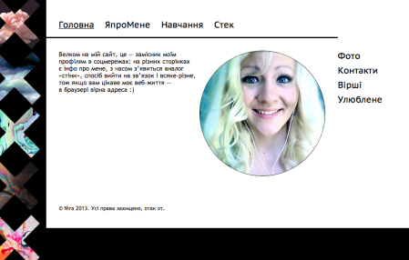
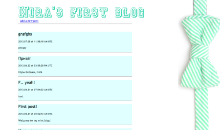
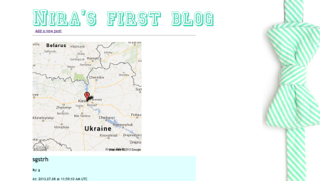
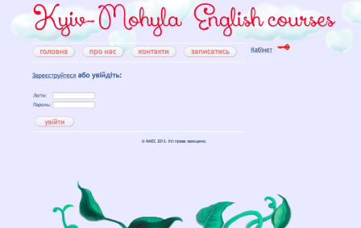

Тож, вже закінчивши аж один рік навчання в унівєрі, можу шось показати аби підтвердити свої наміри стати колись гарним програмістом, і ось мій, поки що маленький, список авторського рукоділля:
-
Персональний сайт (оцей) - в Могилянці викладають такий предмет, як КМІ - Комп’ютерна мережа Інтернет, і написання цих хтмл сторінок було типу лабораторним завданням, хоча тепер це вже окрема справа. В будь-якому випадку, без КМІ я б не мала такої гарної причини поновити знання HTML, Css і перечитати все шо є на сайті Артемія Лєбєдєва (не вражаючі результати, але було дуже цікаво). На даний момент, все лежить на "сервері" вдома і має вигляд звичайний статичних файликів, але планую перетворити цю красу на Java-сервлети.
 -
Перша спроба написати блог - без авторизації, без нічого, просто практичне застосування набутих знань про ГугльАппЕнждін і гуглівські бази даний (дивні оті). Ну ще спробувала прикрутити фронтенд, бо хотіла показати мамі і друзям.
 -
Друга спроба написати блог - є авторизація (власна, не гуглу) і при додаванні посту на мапі залишається позначка з фізичним розташуванням (беремо айпі-адресу, використовуємо послугу веб-сервісу для отримання координат, які передаємо в гугл, що повертає нам зображення мапи).
 -
Сайт курсів англійської мови при НаУКМА - робота виконувалась в дуеті з моїм одногрупником і була практичним завданням з програмування - на Java реалізовано функції: блог на головній сторінці, реєстрація та авторизація користувачів, типи користувачів (user/admin), маленьке чаклування над паролями задля безпеки їх збереження; також придумували дизайн (все, крім надпису червоними літерами зверху, малювала я, а той надпис взяла з безкоштовного сайту із шрифтами), та з цікавого ніби й все. Проект ще на стадії розробки, але в планах його запустити як справжній сайт для комерційної, не знаю, організації, чи як їх там :)
 -
Навчальний проект УНЦ NetCracker - досі в розробці. Справжній груповий проект Java EE, з БД Oracle, на сервері GlassFish, з джава-бінами і всім таким :) GitHub-репозиторій ось тут Фото поки нема, бо над GUI і версткою ми ще навіть не почали працювати, тож потім додам.